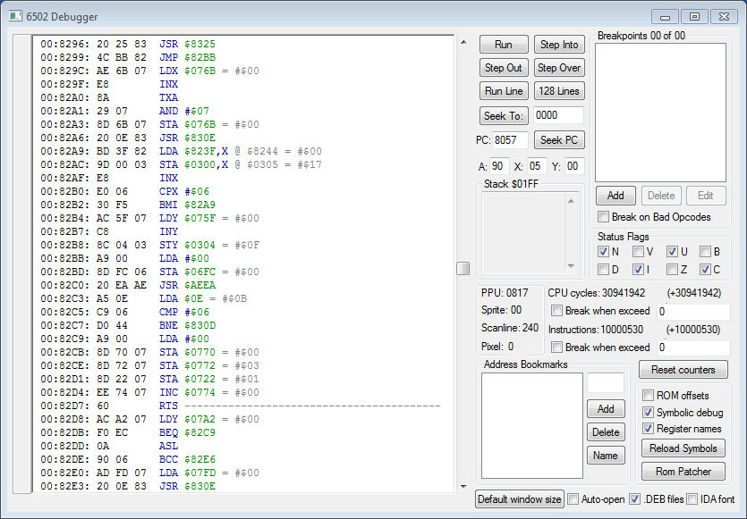
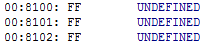
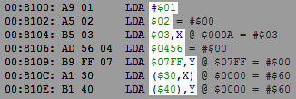

Содержание
Ознакомься с окном Hex Editor перед прочтением раздела.
Debugger (дебаггер, отладчик) предназначен для изучения работы кода игры, а также для редактирования кода. Основная работа с ним осуществляется на паузе эмулятора, в частности после срабатывания брейкпоинтов.
Окно Debugger'а вызывается в эмуляторе FCEUX через Debug -> Debugger (или горячей клавишей). Предварительно нужно запустить игру.

Содержимое окна обновляется при переключении фокуса на другое окно, а затем снова на окно Debugger'а. Также оно обновляется при нажатии на некоторые кнопки.
В старой версии эмулятора нету синей, зеленой и серой подсветки синтаксиса.
Окно охватывает все адреса NES Memory, интерпретируя байты в этих адресах как код. Код в играх находится по адресам $8000-$FFFF.
Значительно реже код также может находиться на батарейке $6000-$7FFF и в RAM $0000-$07FF.
Не весь код, который отображает Debugger, на самом деле является кодом. Окно просто интерпретирует байты в адресах. Достаточно легко отличить реальный код от обычных байтов, которые являются какими-то данными.
Здесь отображаются команды (инструкции) процессора.
Команды получаются исходя из байтов, которые находятся слева. Эти байты называются "опкоды".
Debugger может распознать 151 опкод. Если он не знает как расшифровывается неизвестный опкод, такая команда будет записана как UNDEFINED (неопределенная). На практике чаще всего встречается у байта #$FF.

Одна и та же команда, например

После опкода записан операнд (аргумент) команды. Расшифровка операнда отображается справа от команды.
У некоторых команд отсутствует операнд, у других он размером 1 или 2 байта. Размер операнда и его расшифровка зависит от разновидности команды. Debugger считывает опкод, вычисляет размер операнда, и отображает следующую команду по списку с учетом общего размера инструкции.
Например, команда TXA по адресу $82A0 в сумме занимает 1 байт, поэтому следующим опкодом по мнению Debugger'а является байт по адресу $82A1 ($82A0 + 1). Здесь находится команда AND, разновидность которой в сумме занимает 2 байта, значит следующая команда должна находиться по адресу $82A3 ($82A1 + 2), где отображена команда STA.
Справа от некоторых адресов отображен знак "=", после которого показан байт, находящийся по указанному адресу в NES Memory.
Байт отображается только у тех команд, которые используют или изменяют байт в этом адресе.
Последние 2 указанных на изображении байта относятся к адресам, выделенным серым цветом, а не зеленым.
Если адрес, с которым работает команда, вычисляется через индексную или косвенную адресацию, итоговый адрес будет отображен после знака "@".
Этот итоговый адрес может отличаться в разное время. Правильный адрес гарантированно получается только тогда, когда код выполняет данную команду. Поэтому если эмулятор не стоит на паузе, то не нужно обращать внимание на серые адреса. А даже если и стоит, информация все равно может оказаться неверной. Это же касается и байтов после знака "=".
Если вручную менять байты индексных регистров X и Y на паузе эмулятора, то при обновлении окна итоговые адреса будут пересчитаны и отображены. А даже если окно не обновлялось, то при пошаговом выполнении кода новые байты в регистрах (включая регистр A) все равно будут учтены во время выполнения команды.
Здесь отображен адрес команды, то есть то место, где находится ее опкод в NES Memory.
Слева от него указан номер банка PRG.
Банк - часть памяти из ROM File, подключенная в NES Memory.
Номер банка может не совпадать с номером банка в маппере.
Номер банка не отображается по адресам $0000-$7FFF.